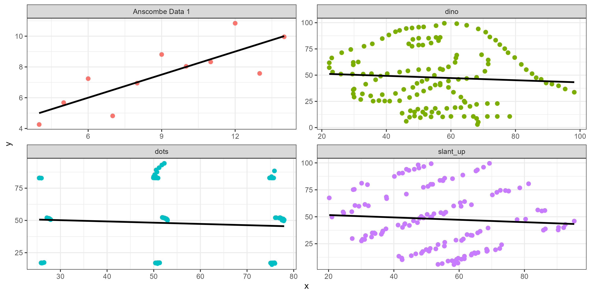

ggplot(pen, aes(x=body_mass_g, y=bill_length_mm)) +
geom_point() + geom_smooth(col = "red")

So does this datasaurus!
The general purpose of regression is to learn more about the relationship between several independent or predictor variables and a quantitative dependent variable.
The goal of Simple linear regression is to describe the relationship between a continuous dependent variable Y and a single independent continuous variable X using a straight line.
See ASCN Ch 7 for the learning content.
These slides contain an example of a full 5 step analysis.
ggplot(pen, aes(x=body_mass_g, y=bill_length_mm)) +
geom_point() + geom_smooth(col = "red")
There is a strong, positive, mostly linear relationship between the body mass (g) of penguins and their bill length (mm) (r=.595).
a. Define parameters Let \(\beta_1\) be the true slope parameter that describes the change in bill length of the penguin as body mass increases.
b. State the null and alternative hypothesis as symbols
\(H_{0}: \beta_{1}=0 \qquad \qquad H_{A}: \beta_{1} \neq 0\)
Both the outcome and predictor are continuous variables that have a visible linear relationship, and observations are independent.
The rest of the model assumptions can be checked after the model is fit using the check_model(my_model_object_name) function from the performance package.
pen.body.bill <- lm(bill_length_mm ~ body_mass_g, data=pen)
pen.body.bill |> summary()
Call:
lm(formula = bill_length_mm ~ body_mass_g, data = pen)
Residuals:
Min 1Q Median 3Q Max
-10.1251 -3.0434 -0.8089 2.0711 16.1109
Coefficients:
Estimate Std. Error t value Pr(>|t|)
(Intercept) 2.690e+01 1.269e+00 21.19 <2e-16 ***
body_mass_g 4.051e-03 2.967e-04 13.65 <2e-16 ***
---
Signif. codes: 0 '***' 0.001 '**' 0.01 '*' 0.05 '.' 0.1 ' ' 1
Residual standard error: 4.394 on 340 degrees of freedom
(2 observations deleted due to missingness)
Multiple R-squared: 0.3542, Adjusted R-squared: 0.3523
F-statistic: 186.4 on 1 and 340 DF, p-value: < 2.2e-16The p-value for \(b_{1}\) is <.0001, so there is sufficient evidence to believe that there is a linear relationship between body mass and bill length.
This section uses functions from the performance package.
library(performance)plot(check_normality(pen.body.bill))
The distribution of the residuals is mostly normal, pretty heavy right tail. This is indicative of a nonlinear trend somewhere in the data.
plot(check_normality(pen.body.bill), type = "qq")
This is also known as a ‘normal probability plot’ or a ‘qqplot’. It is used to compare the theoretical quantiles of the data if it were to come from a normal distribution to the observed quantiles. PMA6 Figure 5.4 has more examples and an explanation.
plot(check_heteroskedasticity(pen.body.bill))
Holy non-flat relationship Batman. The variance of Y is not constant. This is a warning that our linear model does not fit the data well and we should look into possible refinements and improvements.
plot(check_posterior_predictions(pen.body.bill))
This check compares the distribution of predicted values to the distribution of observed values. In this example the observed distribution of bill length is bimodal, and so the model is overestimating some values and underestimating others. There is clearly some other confounding variable that predicts bill length better than just body mass.
pen.body.bill |> coefficients() (Intercept) body_mass_g
26.898872424 0.004051417 pen.body.bill |> confint() 2.5 % 97.5 %
(Intercept) 24.402502194 29.395242653
body_mass_g 0.003467795 0.004635038pen.body.bill |> r2()# R2 for Linear Regression
R2: 0.354
adj. R2: 0.352Each 1g increase in body mass of a penguin is associated with a significant increase of 0.004 (0.0035, 0.0046) mm of bill length (p<.0001).
An increase of 1kg of body mass in a penguin corresponds to a 4(3.5, 4.6) mm increase in bill length.
Body mass explains 35.4% of the variation in bill length.
However, model diagnostics indicate that a linear model may not be appropriate for this relationship. The assumption of constant variance is not upheld and there may be another variable that affects bill length.